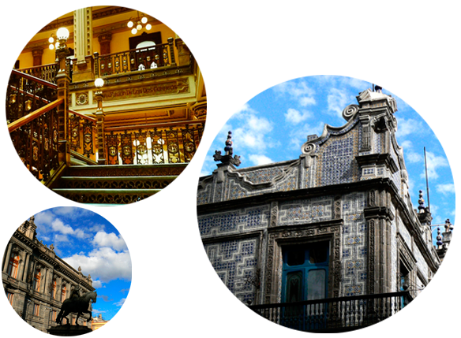
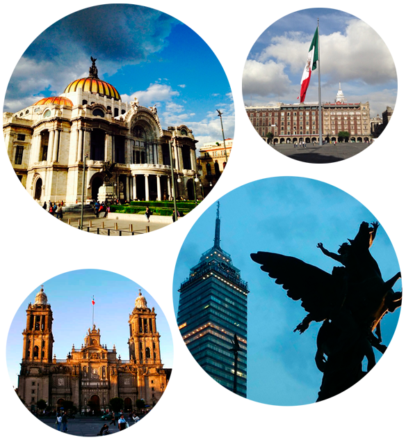
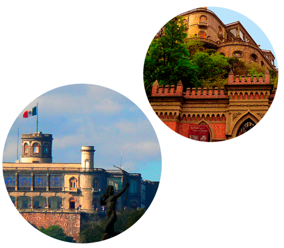
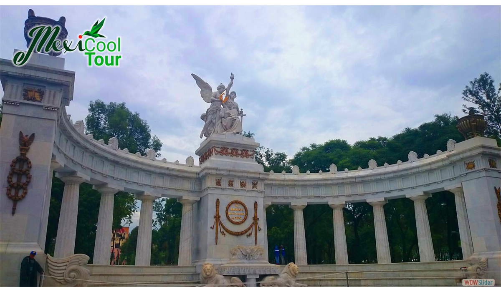

Tours Peatonales
Palacios Virreinales

Déjate envolver por la magia de esta ciudad. Juntos develaremos los secretos, mitos y leyendas que guardan los muros de estos suntuosos palacios, los cuales nos remitirán al glorioso pasado del México virreinal.
A través de este paseo descubriremos la historia de ilustres familias que trascendieron en el tiempo y en el espacio, siendo testigos de su rico legado:
Punto de encuentro
Horario:
Lunes, Miercoles, Viernes 9:00 A.M.
Mercados Mexicanos
AROMAS, SABORES Y COLORES
Seduce tus sentidos con la gran diversidad de formas, aromas, colores y sabores dentro de los más típicos mercados. Enriquece tu espíritu y conoce el alma de la cultura mexicana. ¡Diviértete! y acompáñanos por este recorrido cultural donde el color reina en cada rincón. Y donde el sabor fusiona lo precolombino con lo contemporaneo.
Aventúrate por un paseo agradable, rico en historia y sabor. Tenemos un tour esperando por ti (escoge dos o más):
Punto de encuentro
Horario:
Lunes, Miercoles, Viernes 2:00 P.M.
Centro Histórico
LA CIUDAD DE LOS PALACIOS

La Ciudad de México, conocida también como "La ciudad de los palacios" y otrora capital del virreinato de la Nueva España.
Es una vibrante megalopolis, hogar de 22 millones de habitantes, fundada por los Aztecas en el siglo XIV y considerada la más antigua de América del Norte.
El viaje contempla la visita por las calles más emblemáticas del centro histórico declarado Patrimonio Cultural de la Humanidad, donde podremos admirar las bellas construcciones que van desde la época
Algunas de ellas son:
Punto de encuentro
Horario:
Martes, Jueves, Sábado 9:00 A.M.
Chapultepec
VIAJE EN EL TIEMPO
Deléitate con el bosque de Chapultepec, el más grande dentro de la Ciudad. Lugar de refugio y descanso de gobernantes aztecas y de nobles familias europeas, Nuestro paseo contempla la visita al Altar de la Patria, monumento eregido para honrar la memoria de los cadetes que entregaron su vida por la defensa de México.
A través de los salones del Castillo de Chapultepec conoceremos la esencia histórica de tan singular construcción que funciono desde colegio militar hasta recinto imperial de la casa Habsburgo.
En un simpático trenecito haremos un viaje por este oasis urbano, una parada en el Zoológico de Chapultepec nos mostrara la gran variedad de flora y fauna que resguarda este recinto, considerado el más antiguo de México. Finalmente viajaremos en el tiempo recorriendo la sala Azteca del Museo Nacional de Antropología.

Punto de encuentro
Horario:
Martes, Jueves, Sábado 2:00 P.M.
Punto de Partida
Aquí comenzamos el Tour
HEMICICLO A JUAREZ
en la Alameda Central

El programa incluye:
- Guía bilingüe - Certificado por la Secretaria de Turismo (SECTUR)
- Mapa del lugar visitado
No incluye:
- Propinas a guías y operadores
- Servicios y consumos no especificados
- Alimentos y bebidas no incluidos
La operación de todos nuestros tours necesita un número de pasajeros,
de lo contrario MexiCoolTour® se reserva el derecho de cancelar dicho tour.